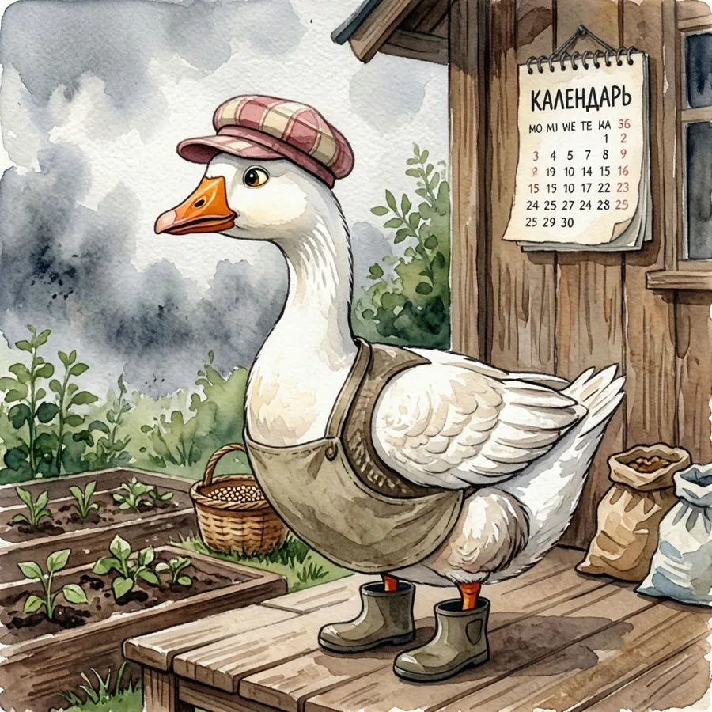

Что делать в саду в этом месяце — напомним 1-го числа
Telegram-канал по вашему региону присылает список сезонных работ: посев, обрезка, подкормка, защита от вредителей — в срок, а не задним числом.

Гусь-смотритель проверит, ничего ли вы не забыли
Зачем это нужно
1
Раз в месяц, вовремя
1-го числа в канале появляется, что делать в саду и огороде именно сейчас — с учётом вашего региона.
2
По декадам и типам работ
Не сплошной список: работы разбиты по декадам месяца и категориям — понятно, что раньше, что позже.
3
Со сроками и источниками
Каждая рекомендация — со сроками, препаратами и ссылками на источники. Спорные данные сверяем перед публикацией.
Почему можно доверять
- 4 региона РФ: Средняя полоса, Юг, Урал и Сибирь, Северо-Запад.
- Данные собраны по открытым агрономическим источникам — ссылки указаны в статьях об агротехнике.
- Тот же календарь доступен на сайте без подписки — posadu.ru.
- Канал бесплатный, без рекламы. Отписаться можно в любой момент — просто выйти из канала в Telegram.
Календарь садовода · 1 сентября
Сентябрь · Средняя полоса
- 1–10 сентября — посадка озимого чеснока, деление и пересадка многолетников.
- 2-я декада — влагозарядковый полив плодовых, сбор и переработка урожая.
- Весь месяц — санитарная обрезка, уборка растительных остатков от вредителей.
Подпишитесь на канал своего региона
Рассылка идёт в Telegram-каналах — без личной подписки и без регистрации, просто подпишитесь на канал.
Общий канал (анонсы) — @posadu_ru